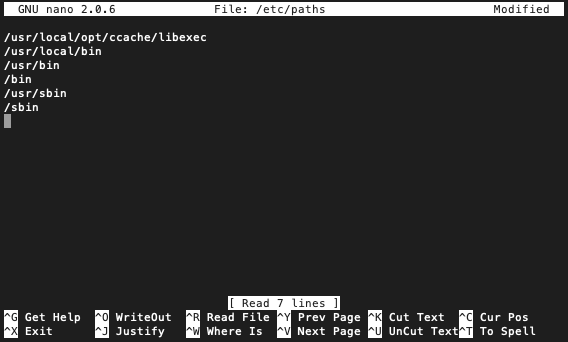

1.2 macOS
Em um terminal, execute os passos a seguir:
Execute o comando
gcc. Se o GCC não estiver instalado, aparecerá uma caixa de diálogo solicitando a instalação das ferramentas de desenvolvimento de linha de comando. Clique em “Install”.Esse procedimento também instalará outras ferramentas, como o Make e Git.
Para verificar se o GCC foi instalado, execute
gcc --version. A saída deverá ser parecida com a seguinte (note que o GCC é apenas um atalho para o Apple Clang):Configured with: --prefix=/Library/Developer/CommandLineTools/usr --with-gxx-include-dir=/Library/Developer/CommandLineTools/SDKs/MacOSX10.15.sdk/usr/include/c++/4.2.1 Apple clang version 12.0.0 (clang-1200.0.32.28) Target: x86_64-apple-darwin19.6.0 Thread model: posix InstalledDir: /Library/Developer/CommandLineTools/usr/binSe o procedimento acima não funcionar (as instruções acima foram testadas no macOS Catalina), baixe o Command Line Tools for Xcode usando sua conta de desenvolvedor do Apple Developer, ou execute
xcode-select --versionno terminal. Em versões mais antigas do macOS pode ser necessário instalar o Xcode.Para instalar os demais pacotes de bibliotecas e ferramentas, instale o Homebrew com o seguinte comando:
/bin/bash -c "$(curl -fsSL https://raw.githubusercontent.com/Homebrew/install/HEAD/install.sh)"Instale o CMake:
brew install cmakeInstale o GLEW, SDL 2.0 e SDL_image 2.0:
brew install glew brew install sdl2 brew install sdl2_image
Está pronto!
Opcionalmente, instale o Ccache para acelerar a recompilação das atividades:
Instale o Ccache usando o Homebrew:
brew install ccacheAnote a saída de
echo $(brew --prefix)(por exemplo,/usr/local).Abra o modo de edição do
PATH:sudo nano /etc/pathsInsira como primeira linha o caminho
$(brew --prefix)/opt/ccache/libexec, onde$(brew --prefix)é a saída do passo 2. Por exemplo,/usr/local/opt/ccache/libexec.
Salve (
Ctrl+XeY) e reinicie o terminal. Para testar, digitewhich gcc. A saída deverá ser um caminho que inclui o Ccache, como a seguir:/usr/local/opt/ccache/libexec/gcc
Instalando o Emscripten
Vá ao diretório home:
cdClone o repositório do SDK do Emscripten:
git clone https://github.com/emscripten-core/emsdk.gitEntre no diretório recém-criado:
cd emsdkBaixe e instale o SDK atualizado (latest):
./emsdk install latestAtive o SDK latest para o usuário atual:
./emsdk activate latestConfigure as variáveis de ambiente e
PATHdo compilador para o terminal atual:source ./emsdk_env.sh
Execute o comando emcc --version. A saída deverá ser parecida com a seguinte:
emcc (Emscripten gcc/clang-like replacement + linker emulating GNU ld) 3.1.45 (ef3e4e3b044de98e1811546e0bc605c65d3412f4)
Copyright (C) 2014 the Emscripten authors (see AUTHORS.txt)
This is free and open source software under the MIT license.
There is NO warranty; not even for MERCHANTABILITY or FITNESS FOR A PARTICULAR PURPOSE.Refaça o passo 6 sempre que abrir um terminal. Como alternativa, insira o comando a seguir na última linha de ~/.zshrc (se estiver usando o shell Zsh no macOS Catalina ou posterior) ou ~/.bashrc (se estiver usando o shell Bash em versões anteriores) para que o script seja executado automaticamente toda vez que um terminal for aberto:
source ./emsdk/emsdk_env.sh > /dev/null 2>&1O trecho > /dev/null 2>&1 serve para omitir a saída padrão (stdout) e o erro padrão (stderr).